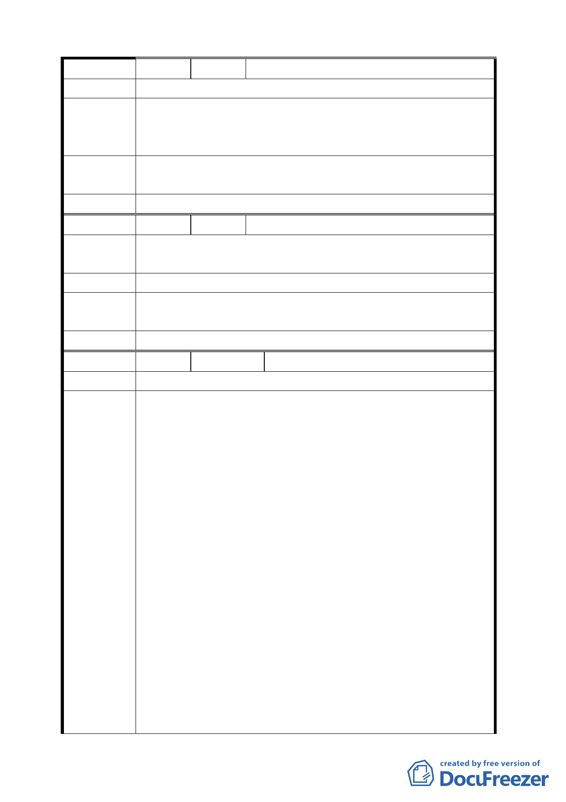

編 號 17 陳情人 林鴻南
陳 情 理 由 確保人民權益。
提高保變住土地之容積率,並將全市保變住土地視為一體由
建 議 辦 法 政府整體一次以區段徵收方式開發以免厚此薄彼,並符公允
原則。
專案小組
審查結論
同編號 1。
委員會決議 同編號 1。
編 號 18 陳情人 陳嘉南
陳 情 理 由 住變保對土地持有人有一定損失，貴委員會應通盤檢討補償
土地所有人。
建議辦法
專案小組
審 查 結 論 同編號 1。
委員會決議 同編號 1。
編 號 19 陳情人 高黃順
陳情理由
一、「保變住」政策之檢討，就政策擬定之目的、各「保變住」
地區之陡坡分布狀況、平坦坵塊面積、大小、分布狀況、
未來引進人口數及公共設施需求等因素，進行檢討。部
分「保變住」地區是否仍維持「需開發」或「可開發」，
應考量北市之空屋狀況及未來住宅需求。
二、「保變住」政策之檢討，應延續民國 83 年「台北市保護
區變更住宅區開發要點」之都委會檢討結論，於開發規
範或開發要點修正條文中，明訂落日條款。
三、如在考量上述因素後，部份「保變住」地區仍以「可開
建議辦法
發」或「應開發」為目標，開發規範及開發要點之修訂，
應就「保變住六之六」地區之開發實務及監察院針對該
案所提之糾正內容進行研議。建議本次所訂定之開發規
範或開發要點修正條文，（1）明訂須於「雜項執照」核
可後，方可進行整地作業（2）開發方式應予開發規範或
開發要點修正條文中明訂（3）基於「社會公平正義」及
「使用者付費」原則，應擴大地主共同負擔之公共設施
項目，地區開發後所衍生之地區性公共設施應將其納入
（4）基於「自給自足」及「受益回饋」原則，重劃共同
一四